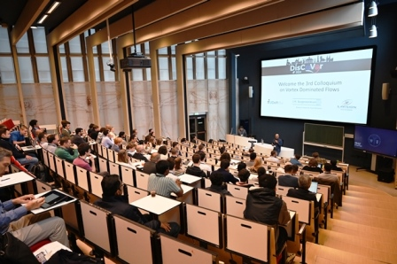
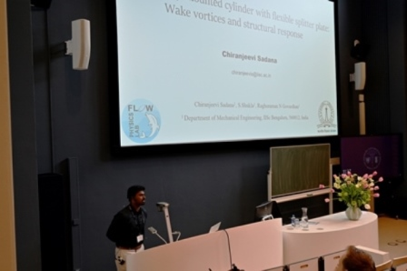
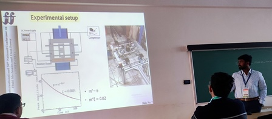
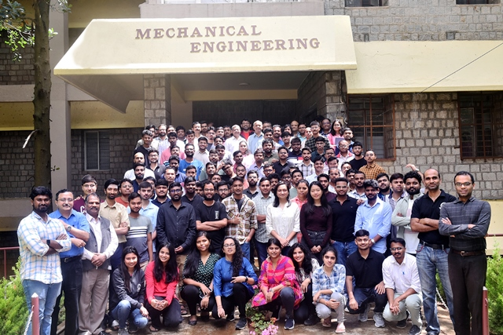
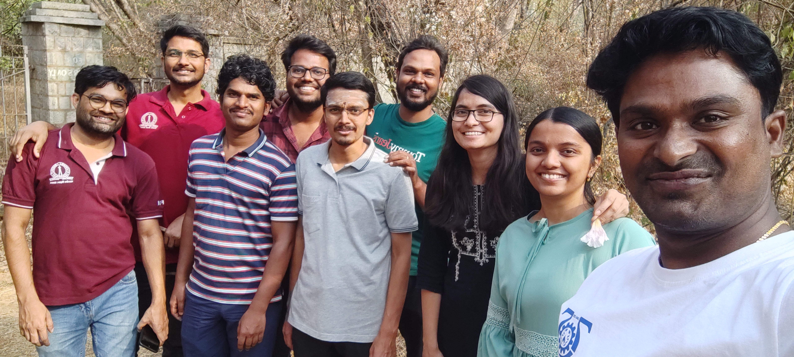

Doctoral Student, Flow Physics Lab, Mechanical Engineering at Indian Institute of Science (IISc).My area of research in flow past the elastically mounted cylinder and this area extends
to investigations of flow-induced vibrations utilizing laser-based techniques for flow visualization.
Specifically, I have explored the behavior of elastically mounted cylinders with splitter plates, threads, bubbles on amplitude response, and forces through the use of sensors.
Education
Indian Institute of Science, Bangalore
PhD in Mechanical Engineering; CGPA: 7.4 (Jan 2020 - July 2025)
Courses: Fluid Mechanics, Turbomachines, Gas Dynamics, Engineering Mathematics, Solid and Fluid Phenomena at Small Scales
Anna University, Chennai
Master of Engineering in Aerospace Technology; CGPA: 8.22 (Aug 2017 - May 2019)
Courses: Aerospace Propulsion, Aerospace Structures, Flight Vehicle Aerodynamics, Computational Fluid Dynamics for Aerospace Applications, Missile Guidance and Control, Hypersonic Aerodynamics, Theory of Boundary Layers
Kottam College of Engineering, JNTUA-Ananthapuramu, Kurnool
Bachelor of Technology in Aeronautical Engineering; Percentage: 85.10 (University Gold Medal) (Aug 2010 - May 2014)
Skills
Languages: C, Python
Tools: SolidWorks, MATLAB , Laser-Based PIV Analysis, 3D printing (PLA)
Experience
Indian Institute of Science, Bangalore
Senior Research Fellow (June 2022 - Present)
Conducted experiments on bluff bodies in polymer flows, VIV cylinder and bubbles interactions.
Junior Research Fellow (Jan 2020 - May 2022)
CFD analysis of bluff bodies in water and polymer flows.
Rajalakshmi Engineering College, Chennai
Assistant Professor (May 2019 - Dec 2019)
Taught courses on CFD and Heat Transfer. Supervised undergraduate projects.
Vikram Sarabhai Space Center, ISRO, Trivandrum
Graduate Trainee (Mar 2015 - Mar 2016)
Assisted in the development and testing of models, performed computational analysis of launch vehicles.
Jet Wings Ltd, Bangalore
Project Trainee (Jan 2014 - May 2014)
Numerical analysis of a reusable launch vehicle using various software.
Projects
Flow over an Elastically-mounted Cylinder with Fairings (2022)
CFD Analysis of Viscous Flows in the Sharp Corner of the Grid Fins (2019)
Effect of Corner Angle on Growth of the Boundary Layer in Sharp Cornered Open Channel Sections (2019)
Numerical Analysis of Re-Usable Launch Vehicle (2014)
Quad-copter: Assembly and Operations (2013)
Honors and Awards
University Gold Medal in Aeronautical Engineering for the batch of 2010-2014.
Selected for the financial support scheme from the Govt. of Andhra Pradesh for Undergraduate B.Tech in Aeronautical Engineering programme,(2010-2014).
Selected for the financial support scheme from the Govt. of Andhra Pradesh for high marks in Board of Intermediate Examinations, March 2010.
Co-Curricular Activities
Running for Student Chairman position from Students Council, Indian Institute of Science.
Volunteer for Convocation July 2024, Food Committee.
Volunteer for Convocation July 2023, Seating Arrangement Committee.
Mechanical Department Students Chair for Campus Open Day, 2023 and 2024.
Food Section Volunteer for ME@75 conference, June 2022.
Committee member of TSS (Telugu Samskruthika Samithi), Indian Institute of Science, June 2022-June 2023.
Member of C Mess Committee, Indian Institute of Science, June 2022-June 2023.
Placement Representative, Aerospace Department, Anna University, June 2018.
Organizer for Techno-Cultural Fest VYMANIKA-2V13, March 2013.
Led team in assembly and control of quadcopter basics using wireless technology, May 2013.
Conferences
International Conferences: Chiranjeevi Sadana, Raghuraman N Govardhan, "Elastically-mounted Cylinder with Flexible Splitter Plate: Wake Vortices and Structural Response", The 3rd Colloquium on Vortex Dominated Flows – DisCoVor 2024, TU Delft, Delft, The Netherlands (Apr 2024).
National Conferences: Chiranjeevi Sadana, Raghuraman N Govardhan, "On the Use of Polymer Solutions to Control the Response of Flexible Splitter Plate",The 10th International and 50th (Golden Jubilee) National Conference on Fluid Mechanics and Fluid Power(FMFP 2023), Indian Institute of Technology-Jodhpur, Jodhpur (Dec 2023).
National Conferences: Chiranjeevi Sadana, BTN Sridhar, "CFD Analysis of Viscous Flows in the Sharp Corner of the Grid Fins", 6th National Symposium on Shock Waves (NSSW 2020), Indian Institute of Technology-Madras, Chennai (Feb 2020).
Publications
Journal Articles: Chiranjeevi Sadana, Raghuraman N Govardhan, "Flow Characteristics and Structural Response of a Cylinder with a Flexible Splitter Plate in Polymer Solutions", Journal of Fluids and Structures, 2024 (under review).
Conference Papers: Chiranjeevi Sadana, Raghuraman N Govardhan, "Control of Cylinder Wake using Polymer Solutions and Flexible Splitter Plate", 76th Annual Meeting of APS Division of Fluid Dynamics, 2023.
Gallery

DisCoVor-2024 Conference in TU Delft, The Netherlands

During presentation in DisCoVor-2024 Conference

FMFP 2023 Coneference PresentationNSSW 2020 Coneference Presentation
Student Activities
First C Mess Committee in 2022Second C Messs Committe with Staff in 2023 Group Photo with Cheif Guest and Administration Heads of IISc in Convocation 2023Meeting with Shri Sudhamurthy in IISc Campus

Department Oreintation to 2024 Batch
My Research Group
Teachers Day Celebrtaions 2023 in LabSubhajit Biswas Farewell Tea MeetChandrasekhar Medipati FarewellDipanjan Farewell

Lab Walk in IISc Park